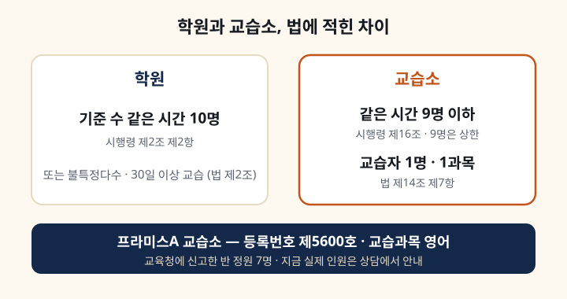

법에는 어떻게 적혀 있나요?
「학원의 설립·운영 및 과외교습에 관한 법률」 제2조는 교습소를 과외교습을 하는 시설 가운데 학원이 아닌 시설로 정의합니다. 같은 법 제14조 제7항은 교습소가 교습자 1명이 한 장소에서 1과목만 가르쳐야 한다고 정합니다. 과목 수와 가르치는 사람 수가 처음부터 묶여 있습니다.
인원 기준은 시행령에 있습니다. 시행령 제16조는 교습소에서 같은 시간에 교습받는 인원을 9명(피아노는 5명) 이하로 묶습니다. 학원을 가르는 기준 수는 같은 시간 10명입니다(시행령 제2조 제2항). 9명은 법이 정한 위쪽 한도이고, 저희가 교육청에 신고한 반 정원은 7명입니다.
등록 사항은 어디서 확인하나요?
수강료·시간 안내 맨 아래 교습비 게시표에 교습소명, 등록번호 제5600호, 교습과목 영어, 교습자 이름, 소재지를 함께 올려 두었습니다. 교습비도 교육청에 신고된 기준 그대로 같은 곳에 공개합니다. 상담 전에 이 표로 등록 사항을 직접 확인하실 수 있습니다.
운영시간은 오후 2시부터 9시까지입니다. 지금 운영하는 반은 초등 4학년반과 초등 5~6학년반, 중등 내신반이고 모두 월·수·금 주 3회입니다. 고등 내신반은 학년과 과정에 따라 따로 편성하고, 수강료는 상담 때 안내드립니다.
한 반에 몇 명인가요?
교육청에 신고한 반 정원은 7명입니다. 교습비 게시표의 과목마다 정원 7명으로 올라 있습니다. 지금 그 시간대에 실제로 몇 명이 듣는지는 상담 때 알려 드립니다. 정원과 학년에 따라 시간 배정이 달라질 수 있기 때문입니다.
인원이 궁금하시다면 아이가 들어갈 시간대에 지금 몇 명이 있는지, 다른 학년과 섞이는지를 같이 물어봐 주세요. 정원 7명이라는 숫자보다 그 시간대의 실제 구성이 아이 수업을 정합니다.
이런 경우엔 안 맞습니다
영어 말고 다른 과목까지 한 곳에서 해결하려는 경우입니다. 교습소는 법으로 1과목만 가르칩니다. 중학생이 시험 기간에만 내신 대비를 받으려는 경우도 맞지 않습니다. 저희 중등부는 정규 과정으로만 운영합니다. 이유는 시험 기간에만 다닐 수 있는지에 적었습니다.
학습태도가 아직 준비되지 않은 경우도 어렵습니다. 저희는 면학 분위기를 엄격하게 지킵니다. 그냥 앉아만 있다 가는 곳을 찾는 경우에도 저희와는 맞지 않습니다. 과제와 확인 과정을 따라오지 않으면 학생 본인이 힘들어집니다.
상담 때 확인할 것
세 가지면 됩니다. 들어갈 시간대의 실제 인원, 그 시간에 배정이 되는지, 교재가 씨앗·잎사귀·꽃·열매 4단계 중 어디서 시작할지입니다. 교재 단계는 첫 수업 뒤에 정하고, 레벨테스트도 등록 후 첫날 수업에서 봅니다. 상담에 학생과 함께 오시고 쓰던 교재를 챙겨 주시면 판단이 빨라집니다. 다른 질문은 자주 묻는 질문에 모아 두었습니다.